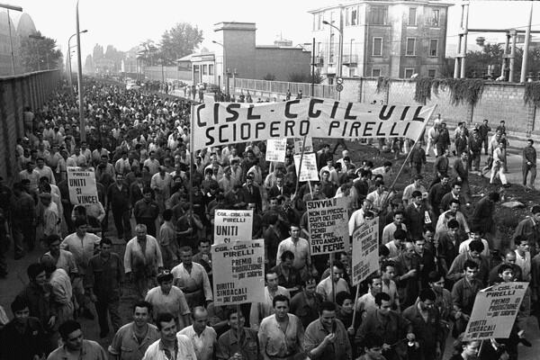
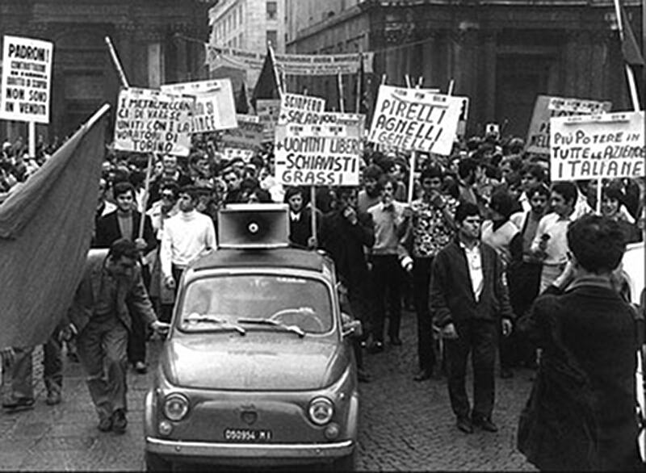
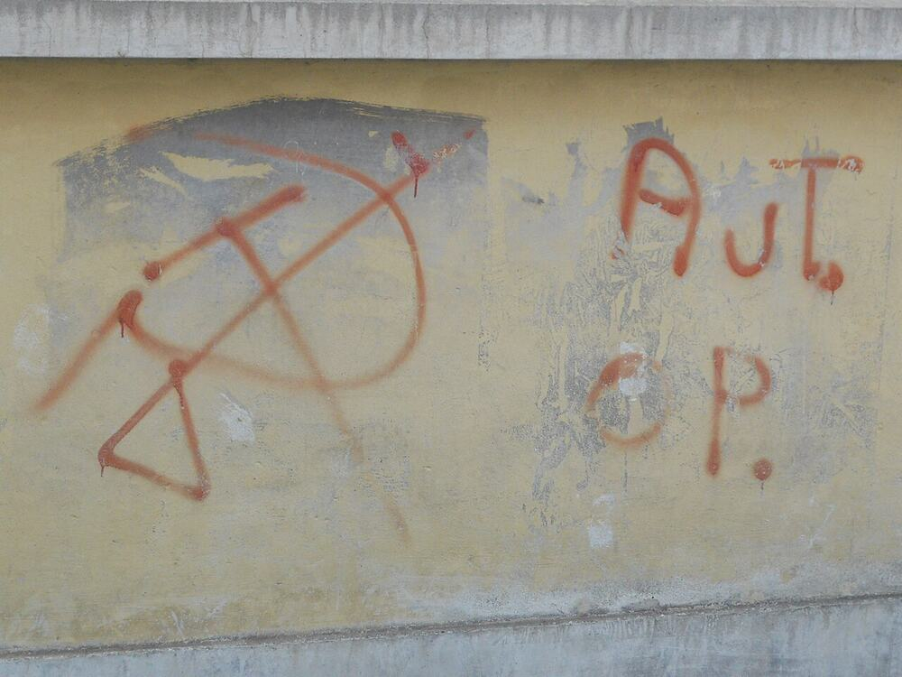

FILE 18 // EST. 1961 // SEATS: TURIN'S FACTORIES, PADUA'S SEMINARS // STATUS: OUT OF THE FACTORY, INTO EVERYTHING
AUTONOMISM
Operaismo's inversion: workers' struggle drives capitalist development,
not the reverse. Refuse work, exit the institutions, and read every strike as theory —
the class doesn't need permission to fight.
OPERAISMOMETHOD: THE REFUSAL OF WORKTHE SOCIAL FACTORY
Post-operaismo — Empire, multitude, immaterial labour
Social-center & alterglobalization currents — Seattle to the squats
SCHISMS
vs. the PCI & official unions — the founding divorce
Internal: Tronti's return vs. Negri's exit — inside the state, or against it
01 Origin Vector
The school began with a methodological scandal. In 1961 the journal Quaderni Rossi —
Raniero Panzieri's dissidents from official Italian socialism — proposed studying capitalism from
below: not the party's program but the workers' inquiry, questionnaires and shop-floor
interviews inside FIAT Mirafiori, asking what workers actually did, refused and sabotaged.
The findings contradicted both the bosses and the official labour movement: the new mass worker —
young, southern, unskilled, contemptuous of craft pride and party discipline alike — was fighting
daily, invisibly, in ways the institutions neither led nor wanted.
Mario Tronti'sOperai e Capitale (1966) turned the finding into a Copernican
revolution: reverse the polarity. Workers' struggle comes first; capitalist development —
automation, restructuring, the welfare state itself — is the response, capital fleeing
forward from insubordination. And if labour creates capital's dynamism, labour's ultimate weapon
is withdrawal: the refusal of work. Italy's Hot Autumn of 1969 — wildcat strikes the unions
chased rather than led — read like the journal's field notes published as history.
02 Core Doctrine
The Copernican inversion
Class struggle drives development: every leap of capitalist modernization is a counter-attack
on a prior insubordination. Read history from the strike outward, and the working class stops
being capitalism's victim and becomes its motor — and its crisis.
Class composition
The school's analytic engine: each phase of capital produces a specific figure of labour
(craft worker, mass worker, socialized worker), and each figure fights differently. Organization
must be read off the composition, not imposed from the archive — which is why this file keeps
updating while others reprint.
The refusal of work
Not laziness — strategy. Absenteeism, sabotage, quitting, the demand for "more money, less
work": the class asserting its life against its function. Socialism as more work, better
administered, is refused along with capitalism.
The social factory
Tronti's extension: when capital saturates society, the whole of life — housing, schooling,
housework — becomes productive terrain. Consequence: everyone in the circuit is class, and the
rent strike, the university occupation and (Federici's wing) unwaged housework are all wage
struggles. Wages for Housework filed accordingly.
Autonomy
From the party, from the union, from the state: the class organizes itself where it is, or is
organized by others for their ends. The councils' old instinct (FILE 08),
re-derived empirically in a car plant.
"We too have worked with a concept that puts capitalist development first,
and workers second. This is a mistake. And now we have to turn the problem on its head... and start
again from the beginning: and the beginning is the class struggle of the working class."
— MARIO TRONTI, OPERAI E CAPITALE (1966)
03 Key Figures
ANTONIO NEGRI 1933–2023 // from Padua's seminars to Empire, via prison
04 In Practice
The 1970s were the school's laboratory and its trial. Autonomia Operaia — less an
organization than a weather system of assemblies, squats, pirate radios (Bologna's Radio Alice)
and "self-reduction" campaigns (paying the old price for bus fares and electricity, en masse) —
made Italian cities briefly ungovernable in 1977. The state's answer arrived on 7 April 1979:
mass arrests of the movement's intellectuals, Toni Negri foremost, charged — on evidence
later collapsing — with masterminding the Red Brigades' terrorism. The archive files the
distinction the prosecutors declined to: Autonomia's diffuse illegality and the Brigades'
armed-struggle vanguardism were rivals, not synonyms; the conflation criminalized a generation.
Negri fled to Paris, taught beside Deleuze, returned voluntarily to prison in 1997, and co-wrote
Empire (2000) from a cell — the school's bestseller, recasting the mass worker as the
global "multitude."
Meanwhile the ideas emigrated: German and Dutch Autonomen took the squats and the black
bloc; Wages for Housework took the social factory into feminism; and the alterglobalization wave
of 1999–2003 ran on post-operaist software, mostly unattributed. Tronti, the founder, took the
opposite exit — back into the Communist Party and eventually the Italian Senate, the inversion's
author electing to invert himself.
05 Schisms & Enemies
vs. the PCI and the unions. The founding enemy was the official labour movement itself:
broker of discipline, co-manager of the plan. The PCI returned the contempt with interest,
cheering the 1979 prosecutions of its left flank.
vs. the Red Brigades. The armed party-building the school's diffuse politics explicitly
rejected — and was jailed for anyway. The internal polemics were bitter before the indictments
merged the defendants.
Tronti vs. Negri, structurally. The "autonomy of the political" (re-enter the party,
wield the state) against the autonomy of the social (exit, build outside). The school's own
reform-or-revolution split, conducted between its two best minds over forty years.
vs. its own success. Post-operaismo's critics — many of them operaisti — note that
"immaterial labour" and the multitude describe the gig economy better than they fight it.
Composition analysis, the file replies, was never a promise; it was a method. The inquiry
continues.
06 Timeline
1961Quaderni Rossi founded; the workers' inquiry enters FIAT.
1964Classe Operaia splits off — Tronti, Negri: intervention over sociology.
1966Operai e Capitale: the inversion in print.
1969The Hot Autumn: wildcat Italy; Potere Operaio founded.
1973Potere Operaio dissolves into Autonomia — organization into weather.
1977The Movement of '77: Bologna, Radio Alice, the creative insurrection.
19797 April: the mass arrests; the decade closes in courtrooms.
1983Negri elected to parliament from prison, escapes to Paris.
2000Empire: the school goes global, from a cell.
2011Occupy's assemblies run operaist software, uncredited; the file notes the royalty.
07 Legacy
Autonomism gave the archive its only genuinely new analytic method since Marx — class composition,
the discipline of reading struggle empirically before prescribing to it — and the century's most
quotable strategic heresy, the refusal of work. Every "quiet quitting" thinkpiece, every gig-worker
wildcat, every squat with a server rack is running some of this file's code. Its unresolved question
is the one it started with, now aimed at itself: when the factory dissolved into society, did the
class gain the whole terrain — or lose the one room where it knew how to win?
08 Plates
Workerism outside the party and outside the union: the Italian factory cycle of 1969 and the movement that came out of it.

Milan 1969 // Pirelli — the Hot Autumn, organised from the shop floor outward

Turin // the Hot Autumn, the cycle the theory was written from

Aut. Op. // the tag on the wall — a movement that wrote on walls rather than issue cards
Plates are vendored from Wikimedia Commons under their own licences and re-encoded to web size; the credit for each is listed in the Plate Room.
.jpg?width=480)